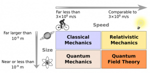

The scope of classical Physics deals with the following branches in Physics
Modern day Physics (after the 19th century) deals with concepts of Relativity and Quantum Mechanics. Relativityas we know was something explored by Albert Einstein. The scope of physics grew as the theory of relativity changed the way we used think about the world and atmosphere. It is most probably the most comprehensive theories which the whole world has acknowledged. The renowned physicist Richard Feynman introduced the world to Quantum Mechanics. It is the study of motion and interaction of subatomic particles, wave-particle duality with the help of suitable mathematical description.
The diagram given below illustrates the different domains based on speed and size of matter in consideration.
Do you think teleportation is possible? If your answer is yes, how would that work? I'll get back to this. If your answer is no, why not? Did people living five hundred years ago know that there will exist a device that can tell you the position of any planet or constellation or such celestial bodies in seconds, should you wish to look for them? I'm talking about Sky Maps of course.
All this has been achieved only because of those people who were curious enough to know why everything exists like it does. The way to teleport is already out there, we just have to find that way how. Where there is a will there is a way, and the will is found through excitement!
Regarding my question on teleportation, we have already achieved the ability for quantum teleportation. In this process, the quantum information (exact information about atom or photon) can be transmitted from one location to another. We may be at this stage now, but who's to say macroscopic beings like us won't be able to transport ourselves from one location to another in the future!